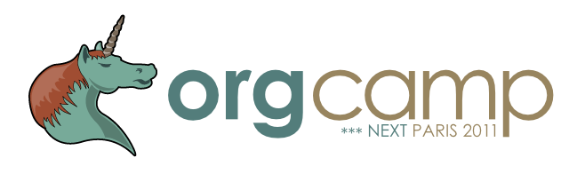

OrgCamps around the world
This page lists some OrgCamps happening around the world.
OrgCamps are informal events where people gather IRL to contribute to Org by discussing how they use it and by doing contributions to the code, the manuals and the online tutorials.
OrgCamp in Madrid, March 8th, 9th 2014
- Organizer: Emacs-es
- Location: C/ Tembleque 136, Aluche, Madrid, Spain.
- Url: Orgcamp Madrid 2013
Description from the website (spanish only)
Los días 8 (desde las 15:00) y 9 de Marzo (desde las 11:00 hasta reventar) de 2014, tendrá lugar en la Caba un encuentro de Emacs para quien quiera pasarse, interesados en aprender modos, funcionalidades, programación, o lo que sea relacionado con GNU/Emacs o el hacking en general sois bienvenidos.
Hemos puesto a vuestra disposición una encuesta para ir enfocando el encuentro a lo que más apetezca.A la luz de los primeros resultados de la encuesta, podrían ser ejercicios interesantes compartir configuraciones hipanas de emacs y enseñar emacs lisp. Pero también se quiere demostrar el poder de org-mode que es a emacs lo que emacs es al sistema operativo.
OrgCamp in Paris, January 22nd 2011 (2m-8pm and beyond)

Figure 1: Banner by Benjamin Drieu, CC by-sa 3.0
- Organizer: Frédéric Couchet
- Location: FPH, 38 rue Saint Sabin, 75011 Paris
- Time: 2pm-8pm
- Participants: see the list on the event’s website
Description from the website (french only):
L'idée est organiser un sorte de Barcamp consacré à org-mode le module
d'Emacs d'organisation et gestion de tâches.
Pour reprendre la définition du BarCamp donnée par Wikipédia :
"Un BarCamp est une rencontre, une non-conférence ouverte qui prend la
forme d'ateliers-événements participatifs où le contenu est fourni par
les participants qui doivent tous, à un titre ou à un autre, apporter
quelque chose au Barcamp. C'est le principe pas de spectateur, tous
participants. L'événement met l'accent sur les toutes dernières
innovations en matière d'applications Internet, de logiciels libres et
de réseaux sociaux."
Cet évènement consistera en des ateliers informels en fonction des besoins
et attentes des participants. Si des personnes souhaitent découvrir les
fonctionnalités de ce module on fera un atelier de présentation. Si des
personnes utilisent déjà org-mode on pourra prévoir des ateliers d'échanges
de pratiques. Et si possible on essayera de rajouter des fonctionnalités ou
corriger des bugs.